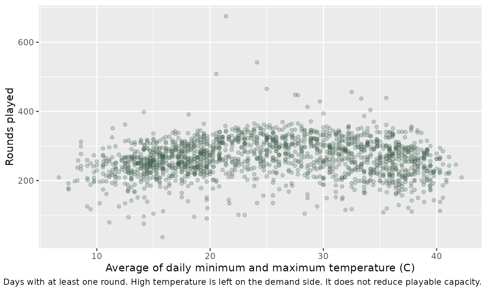

Weather, playable capacity, and price elasticity
Source:vignettes/weather-and-elasticity.Rmd
weather-and-elasticity.RmdThe capacity vignette compares Dobson Ranch rounds with the city’s daylight estimate. This page leaves that estimate in place. It joins historical weather to the same days, shows what may reduce playable capacity, and then uses synthetic rows to show what a log-log price coefficient does and does not identify.
simulate_price_volume() still applies a volume change
typed in by the user. The forecast still predicts observed rounds from
weekday and month. Neither function is a price elasticity.
Weather on the operating dates
Temperature and wind are Phoenix Sky Harbor, GHCND station
USW00023183. Local precipitation is the Mesa 4.3 SW
CoCoRaHS gauge, US1AZMR0260. The gauge does not report
temperature or wind. Airport precipitation is stored beside the local
gauge and is not copied into it. The files were retrieved from NCEI on
2026-11-19. This vignette reads the bundled extract.
weather <- prepare_dobson_weather()
attr(weather, "stations")
#> # A tibble: 5 × 11
#> role station_id station_name latitude longitude elevation_m distance_km
#> <chr> <chr> <chr> <dbl> <dbl> <dbl> <dbl>
#> 1 course dobson_ra… Dobson Ranc… 33.4 -112. NA NA
#> 2 precipitat… US1AZMR02… MESA 4.3 SW… 33.4 -112. 367. 0.81
#> 3 temperature USW000231… PHOENIX AIR… 33.4 -112. 339. 13.9
#> 4 wind USW000231… PHOENIX AIR… 33.4 -112. 339. 13.9
#> 5 airport_pr… USW000231… PHOENIX AIR… 33.4 -112. 339. 13.9
#> # ℹ 4 more variables: variables <chr>, coordinate_note <chr>, source_url <chr>,
#> # retrieved <chr>
attr(weather, "coverage")
#> # A tibble: 6 × 4
#> variable n_days n_missing pct_missing
#> <chr> <int> <int> <dbl>
#> 1 temp_min_c 1765 0 0
#> 2 temp_max_c 1765 0 0
#> 3 temp_avg_c 1765 0 0
#> 4 precip_mm 1765 139 7.88
#> 5 precip_mm_airport 1765 0 0
#> 6 wind_speed_ms 1765 2 0.11
attr(weather, "decisions")
#> [1] "Temperature and wind are Phoenix Sky Harbor, GHCND USW00023183."
#> [2] "The airport station is 13.91 km from the OpenStreetMap centroid of Dobson Ranch."
#> [3] "Local precipitation is MESA 4.3 SW, GHCND US1AZMR0260, a CoCoRaHS gauge."
#> [4] "The local gauge is 0.81 km from the course centroid. It does not report temperature or wind."
#> [5] "Airport precipitation is precip_mm_airport. It is not copied into precip_mm."
#> [6] "Monsoon rain is convective, so the airport gauge can disagree with the course on a single day."
#> [7] "temp_avg_c is the average of the daily minimum and maximum. GHCND TAVG is empty for this station and window."
#> [8] "Units are degrees Celsius, millimeters, and meters per second, converted from GHCND tenths."
#> [9] "A non-blank GHCND quality flag withdraws the value. A measurement flag of T is a trace stored as 0."
#> [10] "Multiday precipitation totals are not spread across the days they cover."
#> [11] "The NCEI access files were retrieved on 2026-11-19. This function does not download them."
#> [12] "The bundled date span is 2021-07-01 through 2026-04-30 and includes 2024-12-10."
#> [13] "Local precipitation is missing on 46.7% of the days in 2026 through the end of this file."temp_avg_c is the average of the daily minimum and
maximum. GHCND did not publish an average temperature for Sky Harbor on
these dates. Units are degrees Celsius, millimeters, and meters per
second. A non-blank quality flag withdraws the value. A trace is stored
as zero. A multiday accumulation is not assigned to one date. Local
precipitation is missing on 139 of 1,765 days, and the gap is wider in
2026. Monsoon rain is convective, so the airport total can disagree with
the course on a single day.
Hot days show up in the rounds, not in the capacity denominator. The daylight estimate is not reduced because the maximum was high.
daily <- dobson_operating_daily()
played <- merge(
daily[daily$rounds_played > 0, c("date", "rounds_played")],
weather[, c("date", "temp_avg_c")],
by = "date"
)
ggplot2::ggplot(played, ggplot2::aes(temp_avg_c, rounds_played)) +
ggplot2::geom_point(alpha = 0.25, color = "#3d5c4a") +
ggplot2::labs(
x = "Average of daily minimum and maximum temperature (C)",
y = "Rounds played",
caption = "Days with at least one round. High temperature is left on the demand side. It does not reduce playable capacity."
)
Playable capacity
Theoretical capacity is the column passed in. Here that column is the city’s daylight estimate. A stated loss of hours reduces it in proportion to daylight hours. Those hours are a statement in the table. A daily rain total does not produce them.
stated <- data.frame(
date = as.Date("2024-07-01"),
rounds_possible = 240,
daylight_hours = 14,
unavailable_hours = 3
)
playable_capacity(
stated,
unavailable_hours = "unavailable_hours",
daylight_hours = "daylight_hours"
)
#> Playable capacity
#> - theoretical_capacity is the capacity column passed into this function. course_capacity() and rounds_possible are not modified.
#> - High temperature does not reduce playable capacity. Temperature can be compared with rounds when the question is demand.
#> - Unavailable hours reduce theoretical capacity in proportion to daylight hours. The hours are a statement in the table. They are not calculated from precipitation, wind, or temperature.
#> - A stated fraction is applied as given. It is not inferred from a daily weather total.
#>
#> # A tibble: 1 × 8
#> date theoretical_capacity playable_capacity unavailable_fraction_applied
#> <date> <dbl> <dbl> <dbl>
#> 1 2024-07-01 240 189. 0.214
#> # ℹ 4 more variables: unavailable_hours_stated <dbl>, restriction <chr>,
#> # restriction_source <chr>, weather_assumption_met <lgl>Three hours out of fourteen removes 3/14 of the 240-round estimate. That proportion is the assumption. It is not a tee sheet.
October zero-round stretches are the closures already used in the capacity vignette. The city file does not label them. The calendar below is the same caller-supplied label. Weather does not invent it.
october <- operating_calendar(
date = daily$date[daily$flag_zero_rounds & daily$month == "October"],
status = "closed"
)
closed <- playable_capacity(daily, calendar = october)
table(closed$restriction_source)
#>
#> none observed_closure
#> 1709 55A precipitation threshold is a different call and a different claim.
At 10 mm or more, the day is treated as fully unavailable. Lost hours
stay missing. The label is weather_assumption, not
observed_closure.
rainy <- playable_capacity(daily, weather = weather, precip_unplayable_mm = 10)
table(rainy$restriction_source)
#>
#> none weather_assumption weather_missing
#> 1597 29 138Days the local gauge missed stay missing under that scenario. They
are not filled with the airport total unless the caller names
precip_mm_airport. High temperature is not a threshold.
A log-log coefficient is an association
Enz and Canina (2016) regress log rounds on log average daily price, course characteristics, minimum temperature, precipitation, location indicators, and a year fixed effect. Their standard errors are clustered by course. The equation is on page 8 of the Cornell working paper, https://hdl.handle.net/1813/72428. The transaction file is not public. The fits below are synthetic samples with a known data-generating process. They do not re-estimate the published coefficients.
estimate_price_elasticity() uses lm(). The
printed standard error is the ordinary least-squares standard error. It
is not a clustered standard error. Rows with a missing, zero, or
negative rounds or price value are dropped because a logarithm is
defined only for positive numbers. The fit reports how many rows that
removes.
Dobson realized green-fee yield is an average of revenue received. It is not a posted price, and it mixes whoever played that day. This vignette does not regress Dobson rounds on that yield.
coef_row <- function(label, fit) {
data.frame(
fit = label,
elasticity = round(fit$elasticity, 3),
ols_se = round(fit$std_error, 3),
conf_low = round(fit$conf_low, 3),
conf_high = round(fit$conf_high, 3),
n_used = fit$n_used,
pct_excluded = fit$pct_excluded,
stringsAsFactors = FALSE
)
}The equation that generated the rows
Price in this sample is independent of the demand shock. The structural elasticity is -0.8. Weekend, temperature, and precipitation enter the rounds equation and the fitted equation.
correct <- simulate_elasticity_sample(
"correct_specification",
n_days = 400,
elasticity = -0.8,
seed = 457
)
attr(correct, "dgp")
#> [1] "log(price) = 3.2 + 0.25 * weekend + 0.15 * z, with z standard normal and independent of the demand shock."
#> [2] "log(rounds) = 5.5 + elasticity * log(price) + 0.30 * weekend - 0.02 * (temp_min_c - 16) - 0.05 * precip_mm + e."
#> [3] "e is normal with mean 0 and standard deviation 0.06."
correct_fit <- estimate_price_elasticity(
correct,
rounds = "rounds",
price = "price",
controls = c("weekend", "temp_min_c", "precip_mm")
)
coef_row("correct specification", correct_fit)
#> fit elasticity ols_se conf_low conf_high n_used
#> 1 correct specification -0.779 0.02 -0.817 -0.74 400
#> pct_excluded
#> 1 0The estimate is close to -0.8 because the sample was built from that equation. That is a check of the estimator. It is not evidence about Dobson Ranch.
Price set in anticipation of demand
In the next sample the course posts a higher price when it expects more play. Weekend and temperature are part of that expectation, and so is a shock that is not returned as a column. The structural elasticity is still -0.8.
endogenous <- simulate_elasticity_sample("endogenous_price", elasticity = -0.8, seed = 457)
naive <- estimate_price_elasticity(endogenous, "rounds", "price")
controlled <- estimate_price_elasticity(
endogenous,
"rounds",
"price",
controls = c("weekend", "temp_min_c")
)
rbind(
coef_row("naive log-log", naive),
coef_row("weekend and temperature", controlled)
)
#> fit elasticity ols_se conf_low conf_high n_used
#> 1 naive log-log 0.042 0.034 -0.025 0.108 400
#> 2 weekend and temperature -0.300 0.060 -0.418 -0.182 400
#> pct_excluded
#> 1 0
#> 2 0The naive coefficient sits near zero. Weekend and temperature move it toward the structural value of -0.8 and leave it well short of that value, because the unobserved piece of anticipated demand is still in the price and in the residual. The controls do not establish a causal elasticity, and they do not justify a price change.
Customer mix with constant segment prices
Residents pay 28 and visitors pay 75 on every date. Segment rounds do not depend on a price term. Visitors are a larger share of play in winter, so the round-weighted average price and the total rounds can rise together.
constant_mix <- simulate_elasticity_sample("segment_mix", seed = 457)
constant_daily <- aggregate_segment_rounds(constant_mix)
mix_fit <- estimate_price_elasticity(
constant_daily,
rounds = "rounds",
price = "price",
controls = "weekend"
)
coef_row("aggregate average price", mix_fit)
#> fit elasticity ols_se conf_low conf_high n_used
#> 1 aggregate average price 1.048 0.014 1.02 1.075 400
#> pct_excluded
#> 1 0
resident_message <- tryCatch(
estimate_price_elasticity(
constant_mix[constant_mix$segment == "resident", ],
rounds = "rounds",
price = "price"
),
error = function(e) conditionMessage(e)
)
resident_message
#> [1] "Price does not vary in the rows that remain, so the price coefficient is not identified."The aggregate coefficient is positive. Inside the resident rows the price does not vary, so the segment fit is refused. The positive number is the winter mix. It is not a demand curve that slopes up.
The same mix, with a known negative segment slope
Each segment now has modest price noise that is independent of the demand shock, and both segments are generated with elasticity -0.8. The winter shift in visitor share remains. The aggregate price is still the round-weighted average.
varied <- simulate_elasticity_sample(
"segment_mix_price_variation",
elasticity = -0.8,
seed = 457
)
resident_fit <- estimate_price_elasticity(
varied[varied$segment == "resident", ],
rounds = "rounds",
price = "price",
controls = c("weekend", "visitor_index")
)
visitor_fit <- estimate_price_elasticity(
varied[varied$segment == "visitor", ],
rounds = "rounds",
price = "price",
controls = c("weekend", "visitor_index")
)
varied_daily <- aggregate_segment_rounds(varied)
aggregate_fit <- estimate_price_elasticity(
varied_daily,
rounds = "rounds",
price = "price",
controls = "weekend"
)
rbind(
coef_row("resident rows", resident_fit),
coef_row("visitor rows", visitor_fit),
coef_row("aggregate average price", aggregate_fit)
)
#> fit elasticity ols_se conf_low conf_high n_used
#> 1 resident rows -0.814 0.017 -0.848 -0.781 400
#> 2 visitor rows -0.814 0.018 -0.849 -0.778 400
#> 3 aggregate average price 0.620 0.045 0.532 0.709 400
#> pct_excluded
#> 1 0
#> 2 0
#> 3 0The segment fits stay near -0.8. The aggregate fit does not. A daily
operating extract that contains only total rounds and an average price
is the third row, not the first two. Putting that aggregate coefficient
into simulate_price_volume() would treat a composition
pattern as a volume response. The simulator does not take an elasticity
object. The volume change remains an assumption the user types in.
visitor_index is available here because the sample was
simulated by segment. A file of daily totals does not reveal it. Adding
it to the aggregate regression would use a column the operating extract
does not have, and it would still be a statistical control rather than a
proof of causation.
What this does not settle
correct_fit$limitations
#> [1] "This is a methodological analogue of Enz and Canina (2016), working paper page 8. It does not re-estimate their published coefficients. Their transaction data are not public."
#> [2] "The published equation uses log rounds, log average daily price, course characteristics, minimum temperature in degrees Fahrenheit, precipitation in inches, location indicators, and a year fixed effect."
#> [3] "The standard error and confidence interval are ordinary least-squares statistics from lm(). They are not standard errors clustered by course."
#> [4] "A column in group is a fixed effect. It does not cluster the standard errors. Course characteristics, weather, location, and year are included only when those columns are named."
#> [5] "Rows with missing, zero, or negative rounds or prices are excluded because a logarithm is defined for positive numbers. The excluded share can change the sample when the omitted rows are closures or missing prices."
#> [6] "The coefficient is the association in the rows that remain under this specification. It is not a causal price elasticity. It is not a recommendation to change a posted price. A positive coefficient is not evidence that demand rises with price."
#> [7] "Rounds played can be censored at capacity. This fit does not correct for that."
#> [8] "An average of prices paid is not a posted rack rate. A shift in customer mix can move that average and total rounds together."
#> [9] "A synthetic sample can recover a known coefficient when the data are generated from the fitted equation. That check is not a description of Dobson Ranch. Dobson realized green-fee yield is not a posted price."Rounds observed at a full tee sheet are below the rounds that would have been demanded. These fits do not correct for that censoring. One synthetic course, or two customer segments on that course, is not the 80-course panel in the working paper. A positive coefficient, including the positive signs the working paper reports for parts of its own sample, is not a recommendation to raise a Dobson Ranch price.